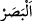

kılmaktan ve zekât vermekten alıkoyamadığı insanlardır. Onlar, kalplerin ve
gözlerin allak bullak olduğu bir günden korkarlar.
“Onlar,” şuhûd makamında son derece müstağrak olduklarından “ne ticâret” yâni
ticâret türlerinden hiçbiri “ne de alış-verişin” son derece kârlı da olsa alış-veriş
türlerinden hiçbiri “kendilerini Allah’ı” tesbîh ve temcîd/yüceltme ile “anmaktan,”
geciktirmeden kendi vakitlerinde “namaz kılmaktan ve zekât vermekten” yâni hak
edenlere çıkarıp verilmesi farz olan malı vermekten “alıkoyamadığı” meşgul
edemediği “insanlardır.”
“__WORD__, bir şey bir kimseyi daha mühim işleri yapmaktan alıkoydu, demektir.
Ticâret, alış-veriş yapmak mânâsında tâcirin sıfatıdır. Tâcir, alış-veriş yapan kimsedir.
el-Müfredât’ta der ki: “Ticâret, kazanç sağlama amacıyla sermaye üzerinde tasarrufta
bulunmaktır. Arapça’da bu kelimeden başka başında tâ harfi bulunup sonra cim harfi
gelen bir lafız yoktur.
Âyette özellikle ticâretin zikredilmesi, onlara göre belirtilen ibâdetlerden insanı en
güçlü ve en meşhur engelleyici/uzaklaştırıcı etken olması sebebiyledir.
“__WORD__ mal verip para almak, yâni satmak “__WORD__ ise para verip mal almak; yâni satın
almaktır. Ticâretin içinde bulunduğu halde satışın ayrıca zikredilmesi, onun ticâretin iki
kısmından en mühimi olması sebebiyledir. Çünkü kazanç, satmakla gerçekleşir. Alınan
bir şeyin kazancı da yine onu satmaya bağlıdır. Dolayısıyla alışın kazancı satış gibi tam
ve yerinde değildir.
Şeyhzâde der ki: “Namazı ikâme etmek; şerîatın öngördüğü bütün rükûn, şart, sünnet
ve edeblerine riâyet ederek namazı tastamam kılmaktır. Bunlardan herhangi birinde
gevşeklik gösteren kimse, namazı ikâme etmiş olmaz.”
Zekât, mescidlerde yapılan ibâdetlerden olmasa da burada getirilmesi, pek çok yerde
namazla birlikte zikredilip ondan ayrı tutulmaması sebebiyledir.
“Onlar, kalplerin ve gözlerin allak bullak olduğu bir günden” kıyâmet gününden
“korkarlar.” “__WORD__, zanna dayanan veya bilinen bir alâmetten dolayı hoşa gitmeyen bir
durum beklentisi içinde olmaktır. “__WORD__ ise zanna dayanan veya bilinen bir
alâmetten dolayı güzel bir durum beklentisi içinde olmaktır. Korkunun zıddı, emniyettir.
Yâni bu insanlar teveccüh ve istiğraklarına rağmen Cenâb-ı Hak’tan korkarlar.
“__WORD__ halden hâle dönmek, değişmek ve girmektir. İnsanın kalbi, bir yönden diğer
yöne çok döndüğünden bu ismi almıştır. Görme organına ve ondaki görme kuvvetine “__WORD__ denir.
Âyetin mânâsı şöyledir: Bu kimseler kalplerin ve gözlerin allak bullak olduğu; korku
ve dehşetten sıkışıp değişerek bulundukları yerlerden fırladığı kıyâmet gününden
korkarlar. O gün kalpler tıpkı “kalbler (yürekler) gırtlağa geldiği zaman” (el-Ahzâb,
33/10) âyetinde buyrulduğu gibi karın boşluğunda dönüp gırtlağa dayanır, ne aşağı iner
ne de dışarı çıkar. Gözlerin dönmesi “korkudan gözlerin dışarı fırlayacağı bir gün”